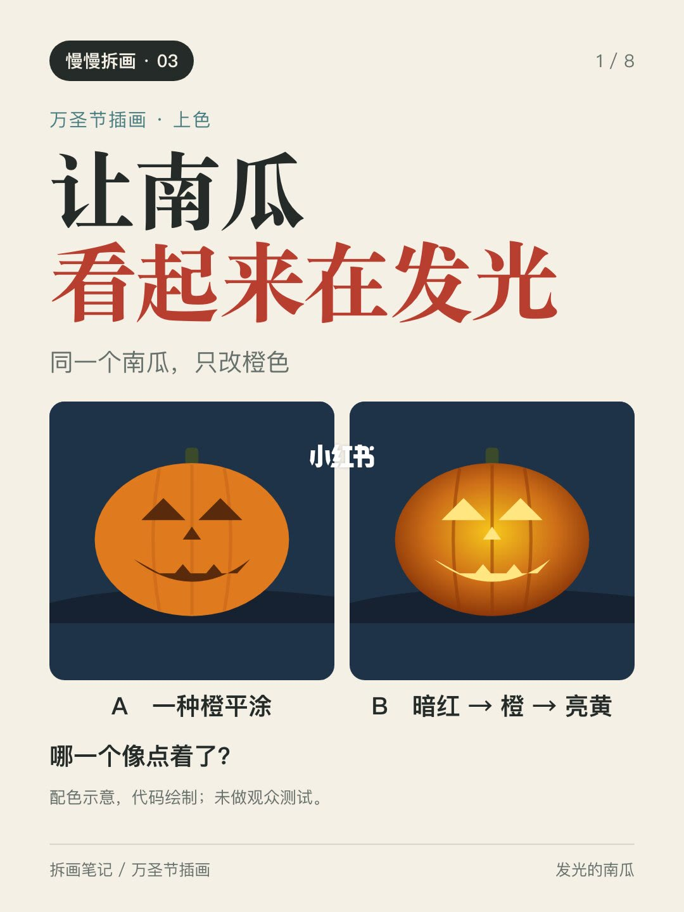
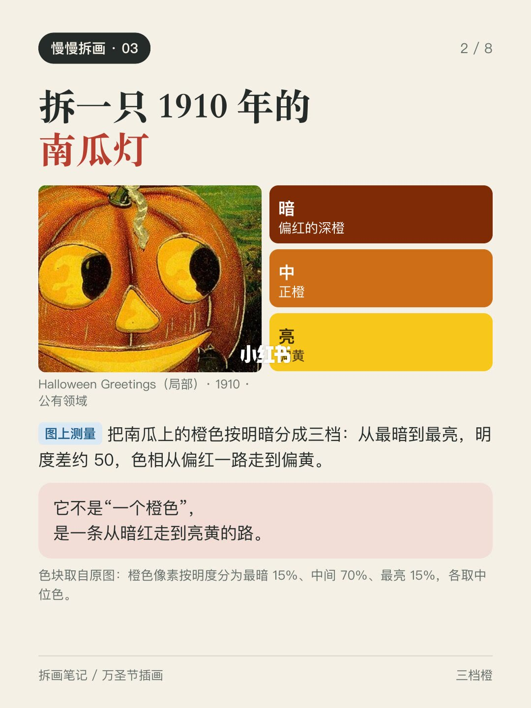
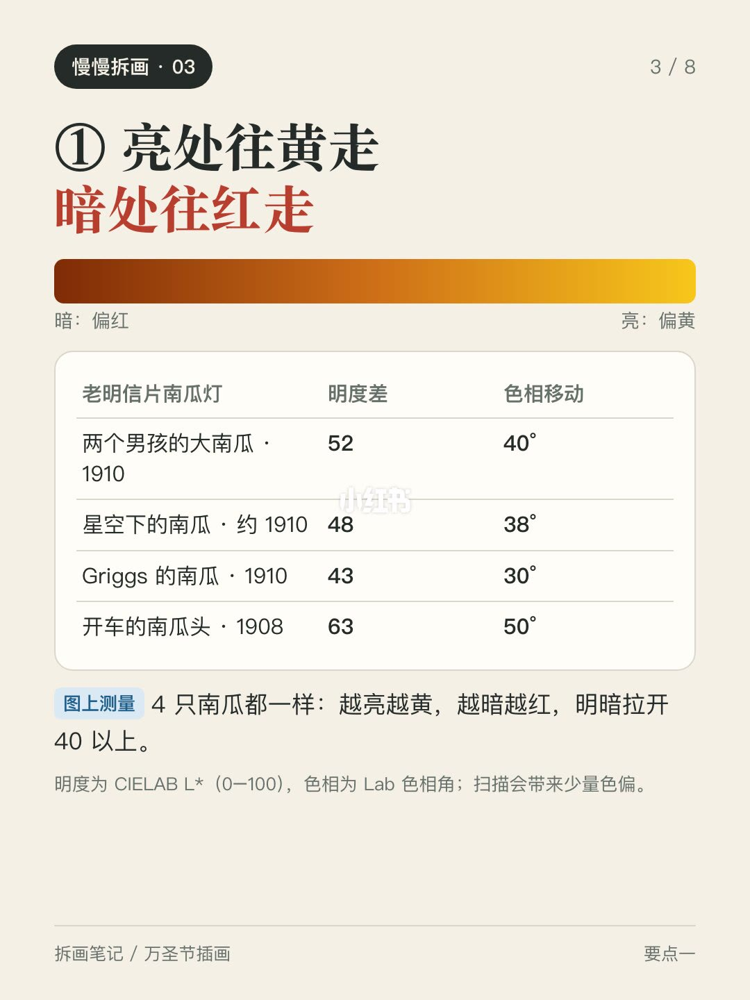
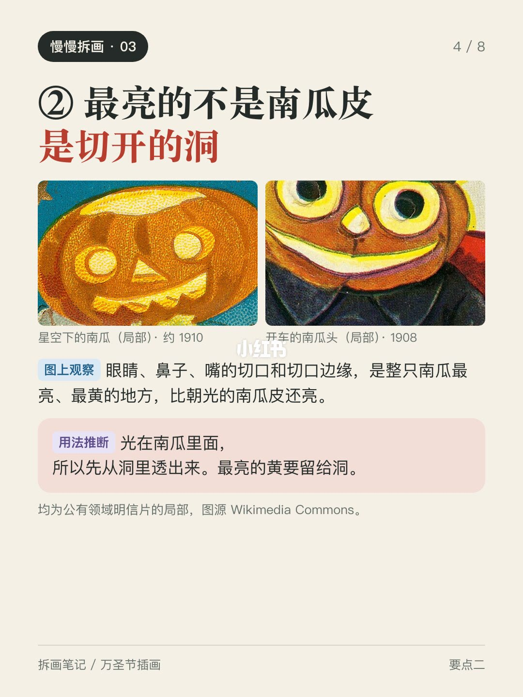
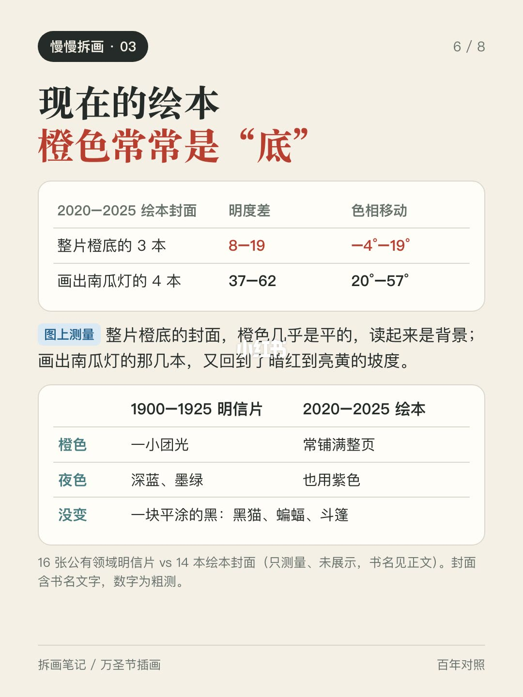
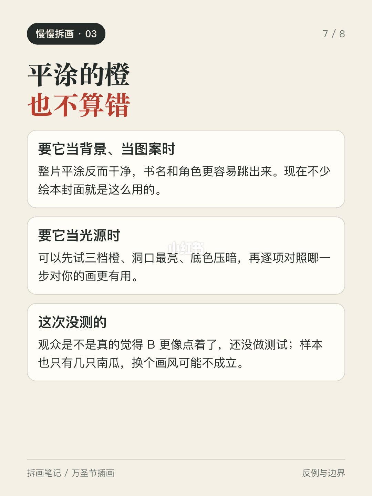
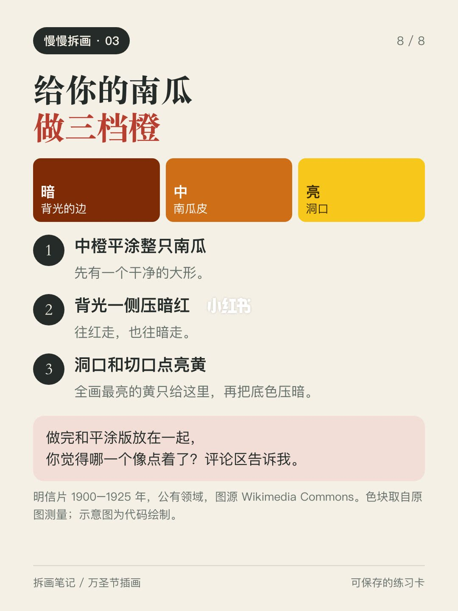

内容要点
封面是同一只南瓜：左边一种橙平涂，右边从暗红走到亮黄。哪一个像点着了？ 我拆了几张 1910 年前后的万圣节明信片，南瓜灯能“发光”，靠的是三件事： ① 亮处往黄走，暗处往红走 把南瓜上的橙色按明暗分成三档，4 只南瓜都一样：越亮越黄，越暗
知识结构
封面是同一只南瓜：左边一种橙平涂，右边从暗红走到亮黄。哪一个像点着了？ 我拆
封面是同一只南瓜：左边一种橙平涂，右边从暗红走到亮黄。哪一个像点着了？ 我拆
- 封面是同一只南瓜：左边一种橙平涂，右边从暗红走到亮黄。哪一个像点着了？ 我拆了几张 1910 年前后的万圣节明信片，南瓜灯能“发光”，靠的是三件事： ① 亮处往黄走，暗处往红走 把南瓜上的橙色按明暗分成三档，4 只南瓜都一样：越亮越黄，越暗越红，最暗到最亮的明度差在 40 以上。它不是一个橙色，是一条从暗红走到亮黄的路。 ② 最亮的是切开的洞 眼睛、鼻子、嘴的切口和边缘，比朝光的南瓜皮还亮、还黄。光在里面，所以先从洞里透出来。 ③ 底色要压暗 两只橙色坡度差不多的南瓜，一只在浅色纸底上，最亮的黄只比纸亮 5；另一只在深蓝夜空里，差了 43。前一只看起来像“被照亮”，后一只才像“在发光”。 顺手对照了 14 本 2020–2025 年的万圣节绘本封面：整片橙底的那几本，橙色几乎是平的，读起来是背景；画出南瓜灯的那几本，又回到了暗红到亮黄的坡度。平涂不算错，看你要它当“底”还是当“光”。 最后一页是三档橙练习卡：中橙平涂、背光压暗红、洞口点亮黄，再把底色压暗。做完和平涂版放一起，评论区说说哪个更像点着了。 数字是在扫描图上粗测的，样本也只有几只南瓜，观众是不是真
封面是同一只南瓜：左边一种橙平涂，右边从暗红走到亮黄。哪一个像点着了？ 我拆了几张 1910 年前后的万圣节明信片，南瓜灯能“发光”，靠的是三件事： ①
1/8–4/8封面/要点：封面是同一只南瓜：左边一种橙平涂，右
封面是同一只南瓜：左边一种橙平涂，右边从暗红走到亮黄。哪一个像点着了？ 我拆了几张 1910 年前后的万圣节明信片，南瓜灯能“发光”，靠的是三件事： ① 亮处往黄走，暗处往红走 把南瓜上的橙色按明暗分成三档，4 只南瓜都一样：越亮越黄，越暗越红，最暗到最亮的明度差在 40 以上。它不是一个橙色，是一条从暗红走到亮黄的路。 ② 最亮的是切开的洞 眼睛、鼻子、嘴的切口和边缘，比朝光的南瓜皮还亮、还黄。光在里面，所以先从洞里透出来。 ③ 底色要压暗 两只橙色坡度差不多的南瓜，一只在浅色纸底上，最亮的黄只比纸亮 5；另一只在深蓝夜空里，差了 43。前一只看起来像“被照亮”，后一只才像“在发光”。 顺手对照了 14 本 2020–2025 年的万圣节绘本封面：整片橙底的那几本，橙色几乎是平的，读起来是背景；画出南瓜灯的那几本，又回到了暗红到亮黄的坡度。平涂不算错，看你要它当“底”还是当“光”。 最后一页是三档橙练习卡：中橙平涂、背光压暗红、洞口点亮黄，再把底色压暗。做完和平涂版放一起，评论区说说哪个更像点着了。 数字是在扫描图上粗测的，样本也只有几只南瓜，观众是不是真




5/8–8/8第5/8页：怎样让南瓜看起来在发光？
封面是同一只南瓜：左边一种橙平涂，右边从暗红走到亮黄。哪一个像点着了？ 我拆了几张 1910 年前后的万圣节明信片，南瓜灯能“发光”，靠的是三件事： ① 亮处往黄走，暗处往红走 把南瓜上的橙色按明暗分成三档，4 只南瓜都一样：越亮越黄，越暗越红，最暗到最亮的明度差在 40 以上。它不是一个橙色，是一条从暗红走到亮黄的路。 ② 最亮的是切开的洞 眼睛、鼻子、嘴的切口和边缘，比朝光的南瓜皮还亮、还黄。光在里面，所以先从洞里透出来。 ③ 底色要压暗 两只橙色坡度差不多的南瓜，一只在浅色纸底上，最亮的黄只比纸亮 5；另一只在深蓝夜空里，差了 43。前一只看起来像“被照亮”，后一只才像“在发光”。 顺手对照了 14 本 2020–2025 年的万圣节绘本封面：整片橙底的那几本，橙色几乎是平的，读起来是背景；画出南瓜灯的那几本，又回到了暗红到亮黄的坡度。平涂不算错，看你要它当“底”还是当“光”。 最后一页是三档橙练习卡：中橙平涂、背光压暗红、洞口点亮黄，再把底色压暗。做完和平涂版放一起，评论区说说哪个更像点着了。 数字是在扫描图上粗测的，样本也只有几只南瓜，观众是不是真



口述/画面要点（8段）
结合 Whisper medium 与画面大字整理；专有名词已校对。
封面/要点：封面是同一只南瓜：左边一种橙平涂，右边从暗红走到亮黄。哪一个像点着了？ 我拆
第2/8页：怎样让南瓜看起来在发光？
第3/8页：怎样让南瓜看起来在发光？
第4/8页：怎样让南瓜看起来在发光？
第5/8页：怎样让南瓜看起来在发光？
第6/8页：怎样让南瓜看起来在发光？
第7/8页：怎样让南瓜看起来在发光？
第8/8页：怎样让南瓜看起来在发光？